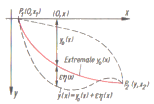

Brachystochronen-Problem
Das Problem der Brachystochrone wurde 1696 von Johann Bernoulli öffentlich gestellt.
Wenn zwei Punkte P1 und P2 gegeben sind, die auf verschiedener Höhe (aber nicht untereinander) liegen, dann sollte unter
allen möglichen Verbindungskurven, auf denen sich ein materieller Punkt unter dem Einfluss der Schwerkraft (ohne Berücksichtigung der Reibung)
von P1 nach P2 bewegt, diejenige aufgefunden werden, für die die Zeit des Durchlaufens ein Minimum wird.
Folgende Information stammt aus dem Buch "Kleine Enzyklopädie - Mathematik", 1977, Verlag Harri Deutsch, Thun und Frankfurt/M.
In einem passend gewählten Koordinatensystem sind zwischen den Punkten P1 und P2 einige solcher Verbindungskurven y = y(x)
als mögliche Fallkurven eingezeichnet.
Da in jedem Punkt dieser Kurven der Weg s, die Zeit t und die momentane Geschwindigkeit v durch die Beziehungen \(\rm v=\large\frac {ds} {dt}\) verknüpft
sind, da die durch die Erdbeschleunigung g erhaltene Geschwindigkeit den Wert \(\rm v=\sqrt {2gy}\) hat und das Bogenelement ds schliesslich
die bekannte Funktion \(\rm ds=\sqrt {1+y'^2}dx\) von y’ und x ist, erhält man die zum Durchlaufen nötige Gesamtzeit T als ein
bestimmtes Integral zwischen den Grenzen x1 und x2:
Aus \(\rm dt=\large\frac {ds} {\sqrt{2g y}} = (\frac {\sqrt {1+y'^2}} {\sqrt{2g y}})\normalsize dx \) folgt
\(\rm T = \large\frac 1 {\sqrt{2g}} \Large\int_{x_1}^{x_2}\large{(\frac {\sqrt {1+y'^2}} {\sqrt{y}})\normalsize dx} \)
Dieses Integral soll für eine gesuchte Funktion y0 = y0(x) den kleinsten Wert haben, d.h., sein Wert ist für alle von
y0 verschiedenen Funktionen y*(x) größer. Nach der Methode der Lösung der Eulerschen Differentialgleichung erhält man mit α als
Parameter und zwei Konstanten C1 und C2 als Lösung die Zykloide
x0 = ±\(\bold {\large\frac {C_1} {2}}\)(α - sin α) + C2,
y0 = \(\bold {\large\frac {C_1} {2}}\)(1 - cos α)